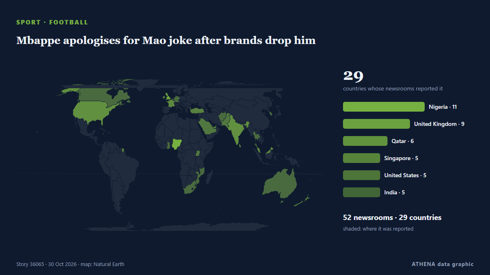

Mbappe apologises for Mao joke after brands drop him

Kylian Mbappe has apologised for his "ill-judged" comment about former Chinese leader Mao Zedong, which has led to Chinese brands dropping the Real Madrid forward. из RTÉ News
Независимые источники: 52 издания в 29 странах, с 27 окт.; первым сообщил France 24 English; освещение идёт на спад. Спорт и культура публикуются без оценки риска. Уверенность — 91 % (высокая); подтверждают независимые источники: 52 издания, средняя надёжность источников — 75 %. СМИ по странам: Нигерия (7), Великобритания (5), ОАЭ (3). Освещение: с 27 окт. по 27 окт., 11 ч.
Что изменилось: 2 новых сообщений от 2 редакций за 24 часа до 30 окт..
Заголовки приводятся на английском языке, как они были опубликованы.
Коротко в цифрах
Отобрано, оценено и написано по опубликованной методологии ATHENA. Ни один редактор не вмешивается в отдельные события. Как это создаётся ›
| 27 Oct 03:54 UTC | 6 |
|---|---|
| 27 Oct 06:54 UTC | 13 |
| 27 Oct 09:54 UTC | 14 |
| 27 Oct 12:54 UTC | 14 |
| 27 Oct 15:54 UTC | 4 |
| 27 Oct 18:54 UTC | 2 |
| 27 Oct 21:54 UTC | 1 |
| 28 Oct 00:54 UTC | 3 |
| 28 Oct 03:54 UTC | 6 |
| 28 Oct 06:54 UTC | 7 |
| 28 Oct 09:54 UTC | 7 |
| 28 Oct 12:54 UTC | 3 |
| 28 Oct 15:54 UTC | 2 |
| 28 Oct 18:54 UTC | 0 |
| 28 Oct 21:54 UTC | 0 |
| 29 Oct 00:54 UTC | 0 |
| 29 Oct 03:54 UTC | 0 |
| 29 Oct 06:54 UTC | 0 |
| 29 Oct 09:54 UTC | 0 |
| 29 Oct 12:54 UTC | 0 |
| 29 Oct 15:54 UTC | 0 |
| 29 Oct 18:54 UTC | 1 |
| 29 Oct 21:54 UTC | 0 |
| 30 Oct 00:54 UTC | 0 |
| 30 Oct 03:54 UTC | 1 |
Откуда эти цифры
Значимость
Риск
Уверенность
Освещение — кто сообщил и когда
заголовок в оригинале · открывает источник- France 24 English · ФранцияKylian Mbappé loses two major China sponsorship deals over Mao Zedong joke
- Free Malaysia Today · МалайзияMbappe dropped by Chinese brands for ‘offending national sentiments’
- CNA (Channel NewsAsia) · СингапурMbappe dropped by Chinese brands for 'offending national sentiments'
- IOL · Южно-Африканская РеспубликаChinese brands axe Mbappe over alleged Chairman Mao meme comments
- Guardian Business · ВеликобританияKylian Mbappé apologises after being dropped by Chinese brands for Mao Zedong comment
- Gulf News · ОАЭKylian Mbappe loses two major sponsors over 'dictator' meme controversy
- BBC Business · ВеликобританияMbappé sorry for 'ill-judged' Mao remark after backlash in China
- Asharq Al-Awsat (English) · Саудовская АравияMbappe Apologizes for Apparent Reference to Mao as a ‘Dictator’
- Anadolu Agency (English) · ТурцияChinese brands drop footballer Mbappe over remarks 'hurting national sentiments'
- RTÉ News · ИрландияMbappe apologises for Mao joke after brands drop him
- Business Recorder · ПакистанMbappe dropped by Chinese brands for 'offending national sentiments'
- Channels TV · НигерияMbappe Dropped By Chinese Brands For ‘Offending National Sentiments’
- Nile Post · УгандаMajor Chinese brands drop Mbappé as backlash grows over Mao joke
- News of Bahrain · БахрейнChina Drops Mbappe Over Controversial Remarks
- Sky News (World) · ВеликобританияMbappe apologises for 'ill-judged' Mao remark after being dropped by Chinese brands
- ABC News Australia · АвстралияChinese sponsors cut ties with Kylian Mbappé after Mao meme backlash
- Punch · НигерияChinese brands drop Mbappe over alleged Mao Zedong joke
- Al Jazeera English · КатарKylian Mbappe loses Chinese sponsors for calling Mao ‘Chinese dictator’
- Cyprus Mail · КипрMbappe dropped by Chinese brands over alleged Mao meme comments
- Vanguard · НигерияChina brands drop Mbappe for ‘offending national sentiments’
- Politico Europe · БельгияMbappé apologizes after being dropped by Chinese brands over ‘dictator’ comment
- Daily Mirror · Шри-ЛанкаMbappé dropped by major Chinese brands as backlash grows over Mao joke
- Stuff · Новая ЗеландияSoccer star Kylian Mbappé apologises for remark about ‘Chinese dictator’
- Gulf News · ОАЭLa Liga apologises to Chinese fans after Mbappe controversy
- CBC News · КанадаChinese brands cut ties with French soccer star Mbappe over 'Chinese dictator' remark
- NBC News (World) · Соединенные ШтатыMao, memes and Mbappé: Chinese brands drop soccer star in fury over ‘dictator’ joke
- Gulf News · ОАЭKylian Mbappe breaks silence on Mao Zedong meme controversy
- Türkiye Today · ТурцияMbappe apologizes to China after backlash over Mao joke
- Indian Express · ИндияKylian Mbappe apologizes for controversial Mao Zedong comment
- The Irish News (Belfast) · ВеликобританияKylian Mbappe apologises for remark about ‘Chinese dictator’
- Belfast Telegraph · ВеликобританияKylian Mbappe apologises for remark about ‘Chinese dictator’
- Jamaica Observer · ЯмайкаMbappe apologises for Mao Zedong comment after Chinese sponsors drop him
- Al Jazeera English · КатарKylian Mbappe apologises after ‘dictator’ comment angers Chinese fans
- Channels TV · НигерияMbappe Apologises For Mao Zedong Comment After Chinese Sponsors Dropped Him
- Vanguard · НигерияMbappe apologises for Mao Zedong comment after Chinese sponsors drop him
- Punch · НигерияMbappe apologises over Mao Zedong comment
- Fortune · Соединенные Штаты‘I think he was a Chinese dictator’: Kylian Mbappé backtracks on stray comment after he starts losing endorsements overseas
- Vanguard · НигерияChinese state TV suspends La Liga broadcasts after Mbappé remark
- RFI English · ФранцияFrom Zidane to Zedong: Mbappé says sorry for comments about former Chinese leader
- Times of India · Индия'I apologize to everyone': Mbappé reacts to 'Chinese dictator' controversy